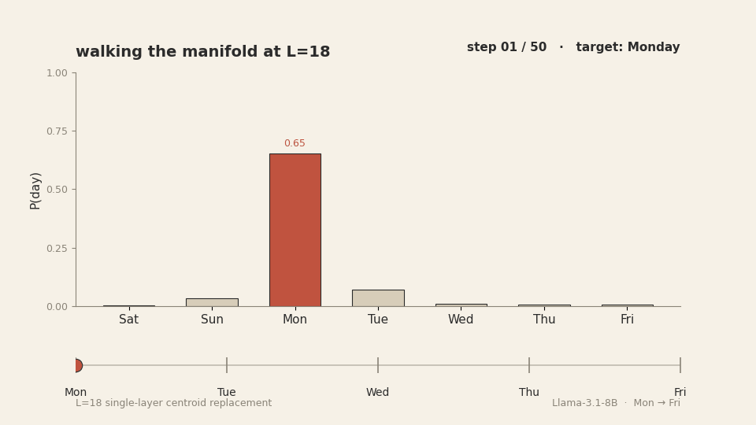
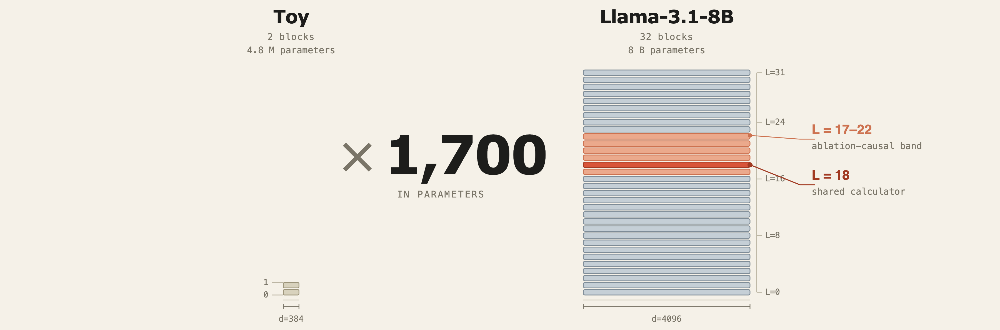
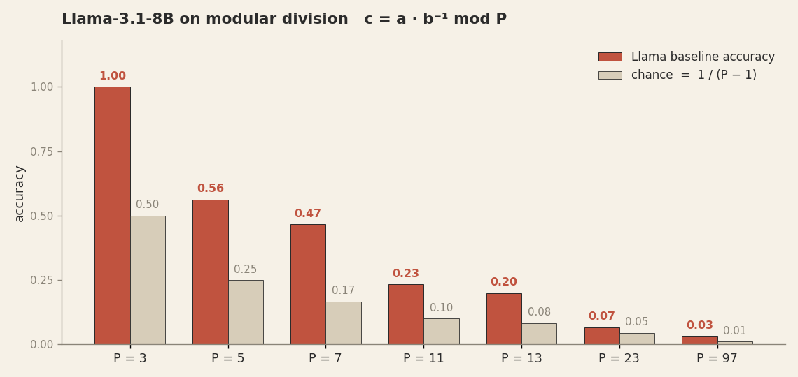
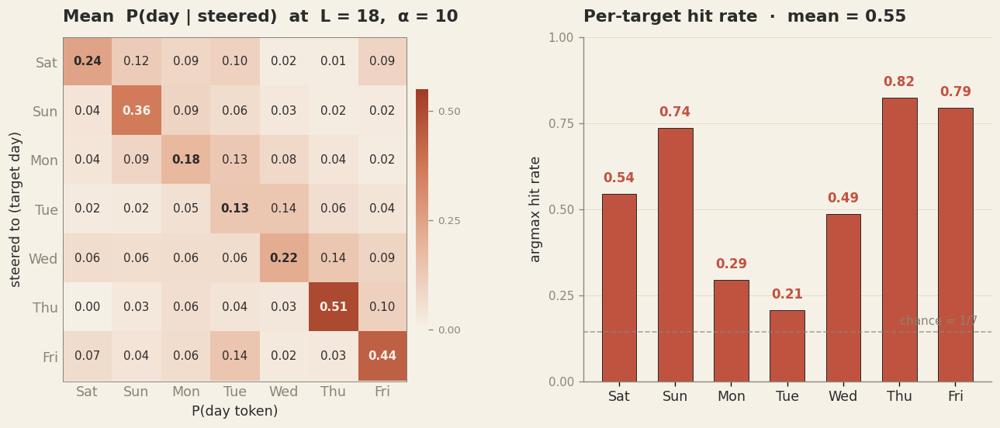
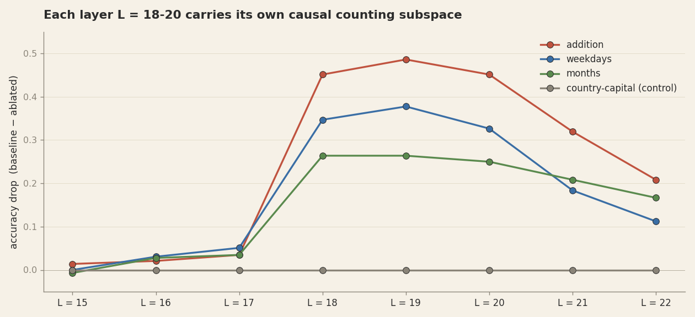
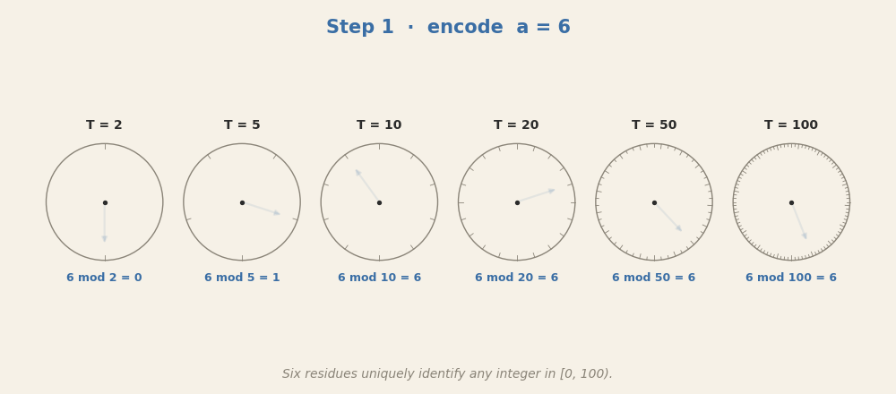
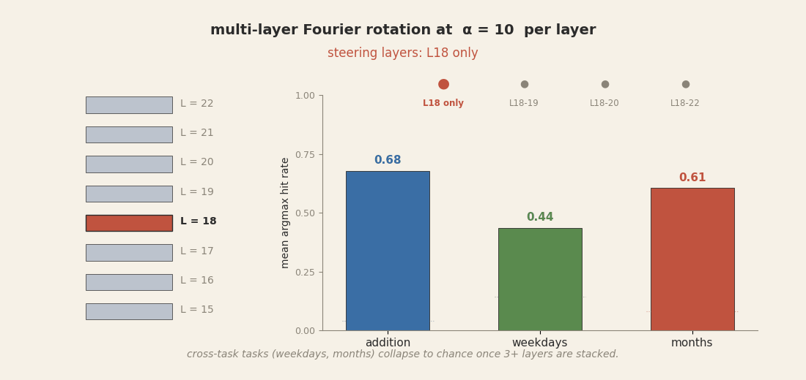
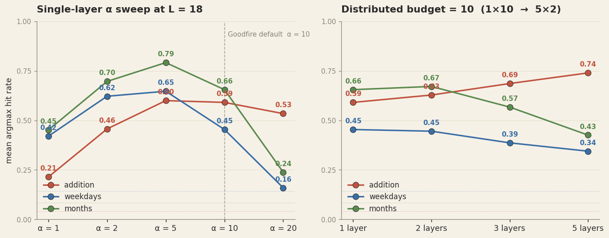
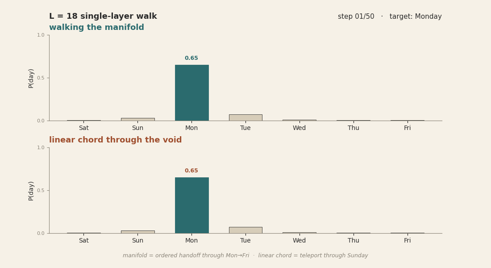

Algorithms in a real LLM
Stepping from a 4.8M-parameter toy into Llama-3.1-8B. Same patterns at scale, different control surface.

Three notes in. The first was a 4.8 million-parameter toy learning modular division on a 97-position clock. We found that the algorithm it built was a knot of twelve Fourier circles in its output projection. The second trained the same toy on four operations at once — div, add, max, parity. We found that each task carved its own privileged basis out of one shared body. The third — coming — steps back and asks what grokking actually is, concluding that it is algorithm formation under low pressure, not a memorisation-to-generalisation transition.
Does any of this carry over to a real general-purpose LLM? Often the answer is no. The training regime at scale is fundamentally different, and crucially we no longer get to train the model ourselves — we have to work with whichever checkpoints are publicly available. Our experiments use Llama-3.1-8B, a medium-small general-purpose open-weights model from Meta. We chose it for three reasons: it is openly available, it is computationally tractable, and Goodfire published two 2026 papers on this exact model that we will lean on heavily.
The short answer: real LLMs build algorithms too — just not the same ones we found in the toy. They are the same kind of mathematical object, they are also stored as several redundant copies at multiple layers, and controlling them requires a fundamentally different, much gentler approach than what worked at toy scale.
1. The bigger brain
Llama-3.1-8B has 32 layers, each carrying a residual stream of 4096 numbers, and about 8 billion weights in total. Compared to the two-layer 384-dim toy of the earlier notes, that is a 1,700-fold scaling. The model was trained on a generic web mixture, not on any single math task, and we have no reason to assume its arithmetic capability is anything more than incidental.

2. First — do the toy's algorithms transfer?
Before proceeding with complex experiments we asked the naive question. If the toy of Part 1 built clean dlog-Fourier circles for div mod 97, are those same circles present in Llama? This is cheap to check with probes.
For each prime P ∈ {3, 5, 7, 11, 13, 23, 97} we built all triples
(a, b, c) where c = a · b⁻¹ mod P — modular division via Fermat's
little theorem. This is exactly the toy's task from Part 1. Modular division has no trivial
fallback: the model cannot answer correctly by simply outputting a + b or copying
one of the inputs. It has to understand modular inverses.

The picture is unambiguous. Baseline accuracy falls from 100% at P=3 (trivial: only one nontrivial divisor) to 56% at P=5, and down to 3% at P=97. No algorithm in the residual, no correct answers at the output.
The difference comes from the training regime. The toy was trained on one task at high weight decay over many thousands of steps, all the way to grokking. The compression pressure was maximal — the only useful structure available was the one solving div mod 97, so that is what the network discovered. Llama was trained on the entire English web plus code and other corpora, at much lower effective per-task weight decay (gradient signal for any one task is diluted by everything else). The reward for a task-specific algorithm targeting an arbitrary prime modulus was small. Whatever the model built had to be a more universal counting primitive — something that pays off across billions of tokens, not on one synthetic task.
But which primitive, exactly? Llama clearly computes something: it adds, it counts days, it answers questions about months. There is algorithmic structure in there, just not the toy's specific one. For tasks that genuinely appear during pre-training — addition, cyclic concepts like days of the week, months, clock hours — the model might well have built an algorithm of the same structural kind as the toy's, just operating on a different cyclic structure. Goodfire's two 2026 papers identify exactly such an algorithm. We checked.
3. What Goodfire found
Ask Llama-3.1-8B 3+7= and it answers 10. Ask
Q: What day is six days after Sunday?\nA: and it answers Saturday.
It gets 69% of weekday-arithmetic prompts right zero-shot,
72% of months-arithmetic, 92% of small additions. Something
is clearly doing the work.
Goodfire's first 2026 paper, "Arithmetic in
the Wild", asked a precise version of the question. They trained pairs of linear probes
on the residual stream of Llama-3.1-8B for the sine and cosine of an integer encoded modulo
T, sweeping the period T. They found that at layer 18,
six probes — one each for periods T ∈ {2, 5, 10, 20, 50, 100} — all hit joint
R² > 0.93. The same six periods are the factor system of 100. The same six
probes, trained only on addition prompts, also work on weekday and month prompts. That is the
Goodfire calculator: six Fourier dials at one layer, used as a base-10 counting circuit
across multiple arithmetic tasks.
We reproduced this independently in our own code with sklearn Ridge probes. Same six periods, same layer, comparable R². The steering experiment also reproduces. It rotates the probe planes to encode a counterfactual sum, runs the forward pass, and checks whether the model's answer follows. On native addition we get a 60% argmax hit rate against 4% chance. On weekdays as a cross-task target the rate is 55%, and on months 65%.

P(day) | target_sum, averaged over 68 baseline-correct
prompts. Right: argmax hit-rate per target sum. Mean 55%, vs 14% chance. Probes trained only on
addition prompts, applied to weekday prompts — the same circuit handles both.
So the calculator is real, it lives at layer 18, and it is shared across counting tasks. That matches the toy story closely. In the toy we had one algorithm carved into a privileged basis of the output projection. Here the model has six Fourier modes carved into the residual stream at a specific layer.
4. Fourier, and not just Fourier
The next question is whether Goodfire's six probes are the whole circuit. They are not.
Project the residual stream at layer 18 onto the orthogonal complement of Goodfire's twelve probe directions (six periods × sine and cosine). This removes the entire Fourier-readable subspace. If the calculator lives there, counting performance should collapse. It does not. On weekdays, baseline accuracy 69% drops only to 67%. On months, 66% to 62%. On addition, 92% to 86%. A measurable hit, but nothing close to chance.
Iterating the procedure: project out the twelve dimensions, retrain probes on the projected activations, project those out too. That recovers fresh Fourier directions of comparable quality for another two rounds. It takes about 36 dimensions, three times Goodfire's minimum basis, before our probes can no longer find Fourier-style readable counting in the residual at layer 18. The first set Goodfire identified is one copy in an ensemble.
Going broader: train fresh Fourier probes at each of layers 15 through 22, ablate each layer's own twelve-dimensional subspace one at a time, measure the resulting drop. Layers 15-17 carry almost nothing — they're upstream of the calculator. Layers 18, 19, 20 each carry a 45-49pp causal subspace. Ablate any one alone and weekday accuracy falls from 69% to about 25%. Layer 21 carries 32pp. Layer 22 carries 21pp. The counting circuit is distributed across at least five adjacent layers, each holding its own independently ablate-able copy.

Even joint ablation across all eight layers (L=15-22), zeroing out 96 dimensions in total, does not push counting accuracy to chance. On weekdays, baseline 69% drops to 29%; chance is 14%. On months, 83% drops to 44%, chance is 8%. There is counting capability beyond the reach of any Fourier-style linear probe — non-Fourier circuits, or counting carried by other periods we didn't probe, or by layers we didn't ablate, or all of the above.
So the calculator is not one circuit. It is a multi-layer ensemble of redundant Fourier copies plus non-Fourier fallbacks. Roughly: probe-readable Fourier counting occupies on the order of 40-50 dimensions of the 4096-dim residual stream, and at least that much again is present in forms our probes cannot read.
5. The meta-algorithm
The toy from Part 1 was already a redundant ensemble. The toy used six to seven universal Fourier frequencies
(cross-seed: k = 11, 19, 25, 35, 44, 48), and the same frequency set appeared in
several weight matrices at once: in W_E composed with the V projections, in the
FFN1-mid neurons, in the residual stream at the eq position, and in W_U. Each
frequency was carried by roughly 150 of the 1,536 FFN1 neurons. Steering on a single frequency
alone (just k = 11) hit only 1.7% of the time. No one frequency was sufficient. The
seven of them together gave the algorithm. The toy was multi-frequency, distributed across
locations, and within-location redundant. The differences with Llama are not whether redundancy
exists, but where it lives and what it is for.
Llama is different in two ways at once. First, instead of one algorithm per task, it builds one shared counting circuit and uses it for every task that needs counting: arithmetic, weekdays, months, hours, possibly clock times and calendar offsets and any other discrete cyclic concept that lives in the training data. The six base-10 periods are not weekday-specific or month-specific, they are a generic integer-encoding system that the downstream layers can read for whatever they need to count. That is what we mean by a meta-algorithm: not a task-specific solution, but a primitive that several tasks consume.

6 + 8 = 14. Each clock encodes one number as a rotation, and addition acts as a
rotation in every clock at once. The six final residues — 0, 4, 4, 14, 14, 14 —
together identify 14 uniquely in [0, 100). Same Chinese-remainder
redundancy principle the toy used with its twelve dlog circles in
Part 1, just with base-10 periods instead of
task-specific frequencies.
Second, Llama has more places to put the redundancy. The same circuit is replicated as multiple copies within the residual at layer 18, replicated again across layers 18-22 as independent causal copies, and shadowed by non-Fourier circuitry that survives even when every Fourier-readable direction has been removed. The toy did the analogous thing at a smaller scale: redundancy distributed across weight matrices and across FFN1 neurons of its two layers. Llama has 32 layers worth of depth to insure across, plus the non-Fourier fallbacks. Same insurance principle, more room to apply it.
6. Control: two kinds
The interesting question is whether all this internal structure lets you control the model
cleanly. In the toy the answer was an unambiguous yes. Steering on the residual manifold:
replace the eq-position residual with M[c], the mean residual for the target
class - hit 100% on every delta in every seed. Multi-mode Fourier rotation across the seven
universal modes hit 95-100%. Chord walking h + (M[c+k] − M[c]) hit 100% across
all tested deltas. Whatever method you reached for in the toy, you got the model to say what
you wanted.
On Llama, the equivalent move is fragile. Take the Goodfire rotation method that worked at
60-65% as a single-layer intervention at layer 18, and try the obvious scale-up: apply the same
rotation at all of layers 18-22 simultaneously. The premise sounds reasonable. We just showed
each of those five layers carries its own copy of the calculator; updating each one in concert
toward the same target ought to give cleaner control, not worse. But it collapses instead.
On the native addition task, hit rate drifts down mildly. On the
cross-task targets, it falls off a cliff: weekday hit rate goes from 44% (single-layer) to 6%
(five-layer), months from 60% to 0%. The reason is amplitude. Goodfire's
α = 10 radius scaling was tuned for one layer. Applied to five layers in
sequence, the total perturbation in the residual stream becomes ten times the amplitude the
model has ever seen in training. Downstream attention and FFN computations receive activations
far outside their training distribution and produce nothing coherent.

α = 10
per layer. Addition (probes' native task) degrades mildly. Cross-task weekdays and months
collapse to near zero by three layers and stay there at five. The model's downstream pipeline
cannot reconcile a residual stream perturbed ten times beyond its training distribution; it
stops producing day or month tokens at all.
There is a sweet spot. Sweep α at a single layer and the peak isn't 10. For
weekday targets it's α = 5, with hit rate 65% (vs 45% at the published default).
For months, again α = 5, hit rate 79% (vs 66% at default). Above 10 every metric
falls. By α = 20 cross-task is near chance. The control surface around the
rotation method is a narrow ridge.

α = 10 over-shoots cross-task; the peak is at α = 5. Right:
distributing the same total perturbation budget across more layers helps the native task but
hurts the cross-task ones. The optimal control topology is task-dependent and surprisingly
narrow.
There is a second method, from Goodfire's
manifold-steering paper. Instead of
constructing a target by rotating in twelve probe directions, build the activation manifold
explicitly from the centroids of known classes — M[Monday],
M[Tuesday], and so on, each one the mean of residuals from prompts the model
correctly answered with that day. Then walk that manifold: interpolate between two centroids
along the curve, evaluate the model at fifty intermediate points, observe the trajectory of
its output distribution over days.
This works. We reproduced it. Walking from M[Monday] to M[Friday]
along the day-centroid spline at layer 18 produces a smooth, ordered transition through
Tuesday, Wednesday, and Thursday in the model's output distribution. Each intermediate day
rises and falls at the right point in the trajectory. The straight line from
M[Monday] to M[Friday] in 4096-d Euclidean space does not. At the
midpoint of the linear path, the model decodes the activation as Sunday, which is
not on the path at all. The cyclic manifold curves in a way that linear interpolation cuts
through regions where the model has learned the activation as a different day.

M[Monday] to M[Friday]. The manifold
path produces a clean ordered handoff through the five days. The linear path teleports
through Sunday at the midpoint because the day centroids form a curve in 4096-d, not a
straight line. Same residual stream, same 50 interpolated points — only the interpolation
geometry differs.
The reason this works is mechanical: each interpolation point on the manifold path is essentially a dictation. We replace the layer-18 last-token activation with a point close to a real, observed activation that the model produces during normal forward passes when the answer is that intermediate day. The downstream layers receive a state they recognise. They produce the answer that state corresponds to. There is no out-of-distribution shock to break the pipeline.
7. What this picture says
First, the algorithm-formation framing from the toy carries over. Real LLMs trained on web text contain multi-frequency Fourier counting circuits of the same mathematical kind that gradient descent forms in a two-layer transformer. The toy is not a toy in the dismissive sense, it is a legible version of the same animal.
Second, the bigger model insures the circuit. Where the toy used one canonical implementation, Llama uses at least three in-residual copies stacked together at layer 18, plus near-independent copies across the next four layers, plus non-Fourier circuitry our probes can't see. The model behaves as if redundancy is cheap and worth paying for. This is a property of scale, not of the algorithm. The same Fourier motif can be replicated many times because the residual stream has dimensions to spare.
Third, and the most interesting for anyone hoping to use interpretability for control: the toy's permissive control surface does not transfer. In the toy any reasonable intervention worked at near-100%. On Llama, the most natural scale-up of the most cleanly identified intervention (rotation across all the layers that carry the circuit) destroys the model's ability to answer at all. The right intervention is gentler than that. It walks along observed activations, not through made-up ones, and its strength is dictated by what the model has actually seen during training. Goodfire's manifold-steering method is, as far as we can tell, that gentler intervention done correctly. The aggressive version of the same idea, applied at the same site, breaks the model.
This is the lesson the toy could not have taught. In a small enough model with a single enough task, you can steer with anything. In a large model with many circuits sharing a residual stream, you have to respect the geometry the model actually uses, and the difference between "respects the geometry" and "ignores the geometry" is the difference between Goodfire's smooth walk and our catastrophic collapse.
8. What we did not test
We restricted ourselves to one model (Llama-3.1-8B), one set of cyclic counting tasks
(weekdays, months, addition, hours), and Goodfire's specific probe family. The same structural
picture probably exists in other open models — we have preliminary evidence that Qwen-2.5-7B
has a partial version of the same calculator, with strong probes only for
T = 2 and T = 100 — but we did not characterise it at the level of
detail we used here for Llama.
We also did not test whether the meta-algorithm idea extends to non-counting circuits. There presumably is, somewhere in Llama, a "list-the-letters" circuit and a "name-the-capital" circuit and many others. Whether they too are redundant ensembles distributed across multiple layers, whether they too admit manifold walking and refuse aggressive control, is an open question. We expect the same shape, but we don't know.
What we feel confident saying, having gone through the experiments, is that the work of Goodfire on Llama is the right shape of result, the toy's algorithmic-manifold framing is the right framing for understanding what they found, and the gap between toy-style and LLM-style control is a real and mechanically-grounded gap rather than a methodological accident. The bigger model carries the same kind of algorithm, hidden across many redundant locations, and the only intervention that handles it cleanly is one that stays inside the part of activation space the model actually inhabits.
9. Reproduce
Everything that produced the figures and animations on this page is in the repository (links open the file on GitHub):
notebooks/toy_algorithms_absence.ipynb— for P ∈ {3, 5, 7, 11, 13, 23, 97}: build(a, b, c = a·b⁻¹ mod P)triples, fit natural-basis and dlog-basis Fourier probes on L=18 residuals. Produces Fig. 2.notebooks/goodfire_replication.ipynb— replicates Goodfire's six-clock base-10 calculator at L=18; Fourier rotation steering on weekday and month Q/A; caches per-class centroids consumed by the manifold-walking notebook. Produces Fig. 3 and the six-clock animation (Fig. 5).notebooks/multilayer_ablation.ipynb— single-layer ablation of the 12-dimensional Fourier subspace across layers 15-22; country-capital control. Produces Fig. 4.notebooks/manifold_walking.ipynb— the main positive result. 50-step centroid walk alongM[Monday] → M[Friday]at L=18; α sweep; multi-layer steering catastrophe. Produces Figs. 6, 7, 8 and the manifold-walk hero animation.data/— JSON / NPY summaries consumed by this page: walk trajectories, ablation drops, steering hit rates, α-sweep results, modular-division probe quality.
The notebooks pull the gated meta-llama/Llama-3.1-8B checkpoint from the Hub
(you need an access token with the model agreement accepted) and write outputs to
./out/. Each notebook has a RECOMPUTE flag — set it to
False to skip the GPU pass and replot from the bundled data/ JSON.